The screenshots and images on this page are from various Pizza.py tools. Click on any small-size image to view a larger version.
| animate | image and GUI from animate tool |
| gnu | GnuPlot plots from gnu tool |
| image | image thumbnails from image tool |
| matlab | MatLab plots from matlab tool |
| mdump | mesh file displayed from mdump,gl,vcr tools |
| multi | multiple tools active simultaneously |
| plotview | plots and GUI from plotview tool |
| rasmol | RasMol images from rasmol tool |
| raster | Raster3d image from raster tool |
| svg | SVG image from svg tool |
| gl | GL image from gl tool |
| vcr | images and GUI from vcr tool |
Image and GUI from animate tool:
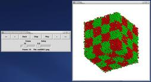GnuPlot plots from gnu tool:
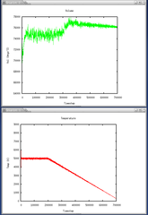Image thumbnails from image tool:
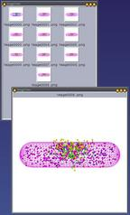MatLab plots from matlab tool
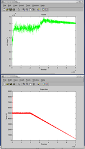 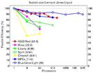Mesh file displayed from mdump,gl,vcr tools
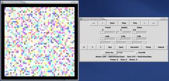Multiple tools active simultaneously
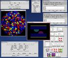Plots and GUI from plotview tool
RasMol images from rasmol tool
3 views of same protein.
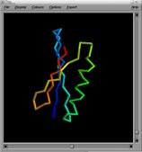 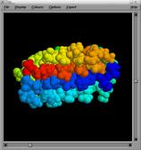
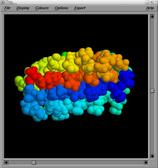
Raster3d image from raster tool
Same data set as SVG and GL images below.
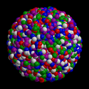SVG image from svg tool
Same data set as Raster3d image above.
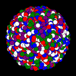GL image from gl tool
Same data set as Raster3d image above.
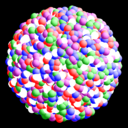Images and GUI from vcr tool:
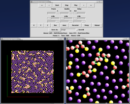